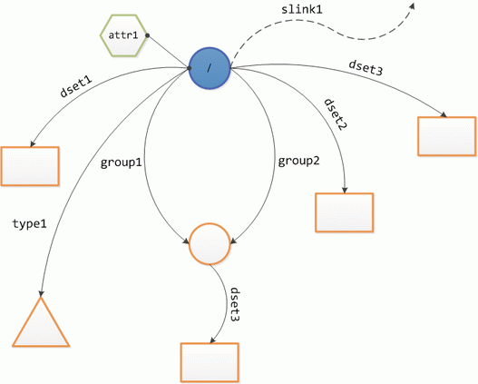

In the following example, we create an HDF5 file whose BNF representation is shown in section 4, "An Example of an HDF5 File in DDL", of DDL in BNF for HDF5. The (multi-)graph structure is shown in the figure below.
The different shapes represent different kinds of HDF5 objects: circles - HDF5 groups, rectangles - HDF5 datasets, triangles - HDF5 committed datatypes, hexagons - HDF5 attributes. Arrows represent HDF5 links labelled with their respective link name. (Download the script, the image file, and the expected outcome here: Create-BNFSample.ps1 , hdf_logo.jpg , sample.h5)
Import-Module HDF5
# determine the HDF5 file's name
$name = 'sample'
$file = Join-Path (Split-Path $MyInvocation.MyCommand.Path) "$name.h5"
if (Test-Path $file) {
Write-Error "File $file exists!"
return
}
# create a new PSDrive and a new HDF5 file as a side-effect (-Force)
$drive = New-H5Drive $name $file -RW -Force
# make the HDF5 root of the new drive our "working directory"
cd "$($name):\"
# create a scalar string attribute of the root group
$attr = New-H5Attribute . attr1 'string attribute' cstring17
# create & initialize a new simple 10x10 integer dataset at /dset1
$dset = New-H5Dataset dset1 H5T_STD_I32BE 10,10
$value = New-Object 'int[,]' 10,10
foreach ($i in 0..9) {
foreach ($j in 0..9) {
$value[$i,$j] = $j
}
}
Set-H5DatasetValue dset1 $value
# define a new compound datatype (JSON)
$t = @"{
"Class": "Compound",
"Size": 16,
"Members": {
"a": [0, "H5T_STD_I32BE"],
"b": [4, "H5T_IEEE_F32BE"],
"c": [8, "H5T_IEEE_F64BE"]
}
}"@
# define a new .NET type to represent $t in memory
Add-Type @"
public class cmpd_a_b_c
{
public int a;
public float b;
public double c;
}
"@
# create & initialize a new dataset /dset2 of type $t
$dset = New-H5Dataset dset2 $t 5
$value = New-Object 'cmpd_a_b_c[]' 5
foreach ($i in 0..4)
{
$value[$i] = New-Object cmpd_a_b_c
$value[$i].a = $i+1
$value[$i].b = ($i+1)/10
$value[$i].c = ($i+1)/100
}
Set-H5DatasetValue dset2 $value
# create a new group /group1
$group = New-H5Group group1
# create a new linked datatype at /type 1 and
# its .NET in-memory representation
$t = @"{
"Class": "Compound",
"Size": 136,
"Members": {
"a": [0, {"Class": "Array", "Base": "H5T_STD_I32BE", "Dims": [4]}],
"b": [16,{"Class": "Array", "Base": "H5T_IEEE_F32BE", "Dims":[5,6]}]
}
}"@
Add-Type @"
public class cmpd_a_b
{
public int[] a = new int[4];
public float[,] b = new float [5,6];
}
"@
$dtype = New-H5LinkedDatatype type1 $t
# make /group1 the "working directory" and create & initialize
# a new dataset at /group1/dset3
cd group1
$dset = New-H5Dataset dset3 /type1 5
$value = New-Object 'cmpd_a_b[]' 5
foreach ($i in 0..4)
{
$value[$i] = New-Object cmpd_a_b
foreach ($j in 0..3) {
$value[$i].a[$j] = $j
}
foreach ($r in 0..4) {
foreach ($c in 0..5) {
$value[$i].b[$r,$c] = ($r+1)/10
}
}
}
Set-H5DatasetValue dset3 $value
#go back to the root group
cd ..
# create and initialize a new dataset at /dset3
$t = '{"Class": "Vlen", "Base": "H5T_STD_I32LE"}'
$dset = New-H5Dataset dset3 $t 4
$value = @(@(0), @(10,11), @(20,21,22), @(30,31,32,33))
Set-H5DatasetValue dset3 $value
# hard link the group at /group1 as /group2
$hlink = New-H5Hardlink group2 /group1
# create a new soft link at /slink1
$slink = New-H5Softlink slink1 somevalue
# bonus material: add a JPEG image as an HDF5 image
$image = Join-Path (Split-Path $MyInvocation.MyCommand.Path) 'hdf_logo.jpg'
if (Test-Path $image) {
$logo = New-H5Image hdf_logo $image
}
# leave & remove the HDF5 drive
C:
Remove-H5Drive $name
# open the new HDF5 file in HDFView (if present)
$hdfview = 'C:\Program Files\TheHDFGroup\HDFView2.8\HDFView.exe'
if (Test-Path $hdfview) {
$hdfview $file
}
{kind=link}